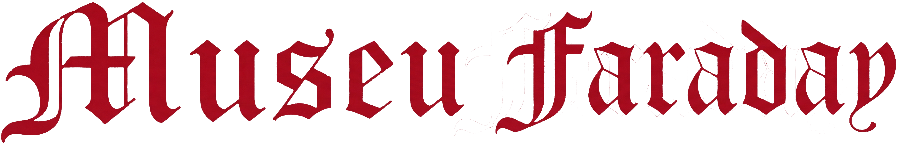

Explore an interactive 3D reconstruction of the Chamusca estate's private electricity system — assembled between 1918 and 1929, now preserved at the Museu Faraday.
Explore uma reconstrução 3D interativa do sistema de eletricidade privado da Quinta da Chamusca — montado entre 1918 e 1929, hoje preservado no Museu Faraday.
Rua Direita de São Pedro n.º 194, Chamusca · Donated March 2023 Rua Direita de São Pedro n.º 194, Chamusca · Doado em Março 2023
Interactive 3D · WebGL 3D Interativo · WebGL
Section I Secção I
The estate at Rua Direita de São Pedro n.º 194, Chamusca, belonged to noble families ancestral to Eng.º Miguel Pestana Vasconcelos — a descendant of Eng.º José de Mascarenhas Pedroso Belard da Fonseca (1889–1969), Director of IST between 1942 and 1953, Bastonário of the Order of Engineers, and Vice-Rector of UTL.
A quinta situada na Rua Direita de São Pedro n.º 194, na Chamusca, pertenceu a famílias nobres antepassadas do Eng.º Miguel Pestana Vasconcelos — descendente do Eng.º José de Mascarenhas Pedroso Belard da Fonseca (1889–1969), Diretor do IST entre 1942 e 1953, Bastonário da Ordem dos Engenheiros e Vice-Reitor da UTL.
At a time when no public electricity grid existed in Chamusca, the quinta assembled a self-contained off-grid power station between 1918 and 1929. The system followed Thomas Edison's 110 V direct-current distribution model, already tested in New York and Lisbon at the turn of the century.
Numa época em que não existia rede pública de eletricidade na Chamusca, a quinta montou uma central de energia autónoma entre 1918 e 1929. O sistema seguia o modelo de distribuição de 110 V em corrente contínua de Thomas Edison, já testado em Nova Iorque e Lisboa na viragem do século.
In March 2023, the complete installation was donated to the Museu Faraday at the Pavilhão de Eletricidade, IST, where it is now being restored for permanent exhibition at the DEEC department.
Em março de 2023, a instalação foi doada na sua totalidade ao Museu Faraday, no Pavilhão de Eletricidade do IST, onde está a ser restaurada para exposição permanente no departamento de DEEC.
Underground spring served by a nora driven by horses or oxen; water stored in the Lago dos Patos.
Água retirada de uma mina por uma nora acionada a animais; armazenada no Lago dos Patos.
Single-cylinder combustion engine replaces animal traction; water elevated mechanically.
Motor monocilíndrico de combustão substitui a nora; água elevada mecanicamente.
Installed by Circ.ão IND.al, Lisbon. The estate receives 110 V DC for the first time.
Instalado pela Circ.ão IND.al, Lisboa. A quinta passa a dispor de 110 V CC.
60-cell lead-acid accumulator set allows energy storage independent of the engine.
60 acumuladores de chumbo-ácido permitem armazenamento independente do motor.
3-phase induction motor (380 V, 50 Hz) drives the dynamo from the public AC grid.
Motor trifásico (380 V, 50 Hz) passa a acionar o dínamo a partir da rede pública.
Complete installation transferred to the Pavilhão de Eletricidade for restoration and permanent exhibition.
Equipamentos transferidos para o Pavilhão de Eletricidade para restauro e exposição permanente.
Section II — Catalogue of Objects Secção II — Catálogo de Equipamentos
Single-cylinder oil/paraffin engine with dual cast-iron flywheel (est. >500 kg each). Ignition via high-tension magneto.
Motor monocilíndrico a óleo/parafina com duplo volante (est. >500 kg cada). Ignição por magneto de alta tensão.
Type K5, No. 91522. Västerås, Sweden. Belt-driven from the Crossley. Output 115–160 V DC at 1,550 RPM.
Tipo K5, N.º 91522. Västerås, Suécia. Acionado por correia. Saída de 115–160 V CC a 1550 RPM.
Type MKA12, No. 439698. Star connection (Y). Supplied by Jayme Sá Costa Lda. Drives the dynamo from AC grid.
Tipo MKA12, N.º 439698. Ligação em estrela (Y). Fornecido por Jayme Sá Costa Lda. Aciona o dínamo da rede CA.
60 open vented cells, Type L1, No. 969. Sociedade Portuguesa do Acumulador Tudor. Tap points at cells 40–60.
60 acumuladores abertos, Tipo L1, N.º 969. Soc. Portuguesa do Acumulador Tudor. Derivações nos elementos 40–60.
Three panels: DC main control (160 V voltmeter, 30 A ammeter); 3-phase AC input; 3-phase motor control.
Três quadros: controlo CC principal (voltímetro 160 V, amperímetro 30 A); entrada CA; controlo motor trifásico.
Electromagnetic contactor with mercury-filled cup switch controlling the battery circuit. Hand lever, solenoid coil, mercury contact.
Contactor eletromagnético de mercúrio controlando o circuito da bateria. Alavanca manual, bobina solenoide, copo de mercúrio.
Section III Secção III
Museu Faraday
Pavilhão de Eletricidade
IST · Universidade de Lisboa
Pedro Grilo
Pedro Fazenda
João Casaleiro
ISEL · Instituto Politécnico de Lisboa
Moisés Piedade
IST · Universidade de Lisboa
Digital Applications in Archaeology
and Cultural Heritage,
Elsevier, 2026